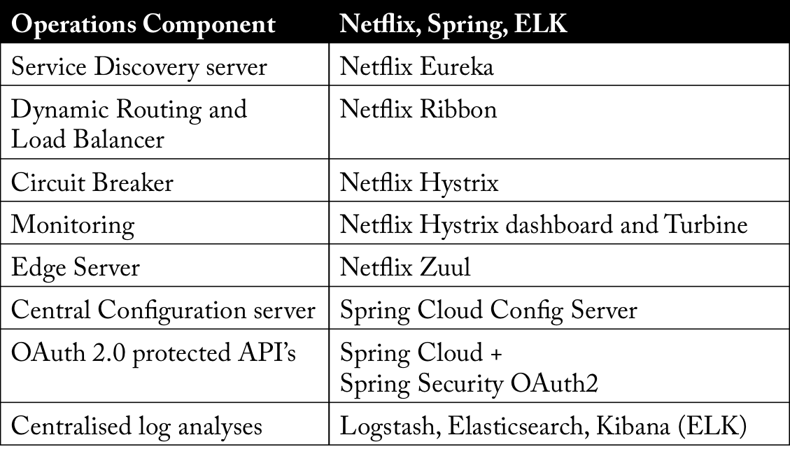
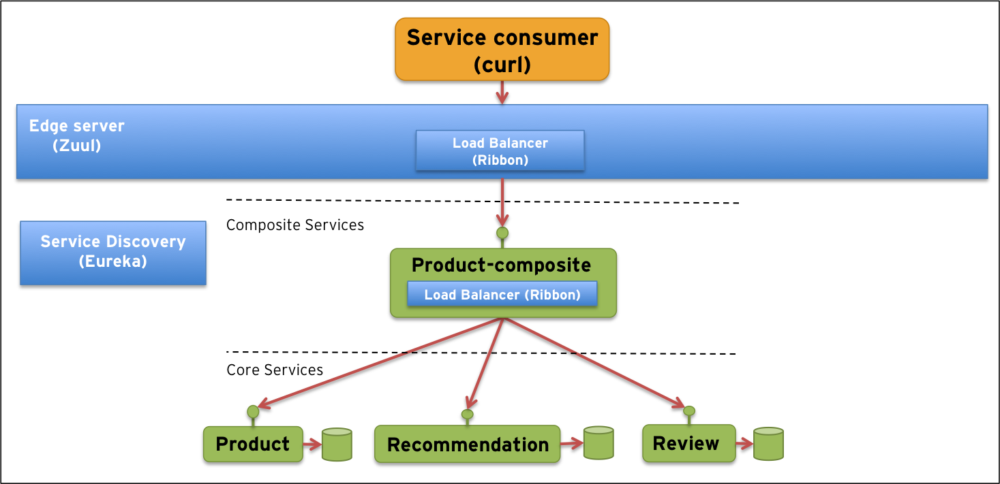

在前面的文章中我们定义了一个微服务应用操作模型。现在我们将开始研究怎样使用Spring Cloud和Netflix OSS实现这个模型。通过实施这个模型，我们将覆盖最核心的部分：服务发现、动态路由、负载均衡、以及一些边缘服务。
我们将使用Spring Cloud 和 Netflix OSS的一些核心组件，允许单独部署的微服务相互通信，无需手动管理。例如：跟踪每个微服务使用的端口或路由规则的手动配置。为避免端口冲突问题，我们的微服务在启动是将动态分配空闲端口从一个端口范围。为了允许对微服务的简单访问，我们将使用边缘服务器，它为微服务系统提供了一个众所周知的入口点。
在简单介绍 Spring Cloud 和 Netflix OSS组件后，我们将展示一个我们将在整个博客系列中使用的系统架构。我们将介绍如何访问源代码并构建它。我们还将简要介绍并指出最重要部分的源代码。最后，我们通过运行一些关于如何访问服务的测试用例进行总结，并演示了如何简单地启动微服务的新实例并让负载均衡器开始使用它，同样无需任何手动配置。
1 Spring Cloud 和 Netflix OSS
Spring Cloud是Spring.io家族的一个想项目，它包含一组可以帮助我们实现我们的操作模型的组件。很大程度上Spring Cloud 1.0是基于Netflix OSS组件。Spring Cloud通过非常好的方法将Netflix组件集成到Spring环境中，使用类似于Spring Boot工作方式的自动配置和约定配置。
下表是在微服务操作模型中通用组件和我们在博客中将要使用实际组件对照：

这篇文章讲覆盖Eureka、Ribbon和Zuul:
Netflix Eureka- 服务发现服务Netflix Eureka允许微服务在运行注册自己，因为他们出现在系统环境中。Netflix Ribbon- 动态路由和负载均衡，服务消费者可以使用Netflix Ribbon在运行时查找服务。Ribbon使用Eureka中提供的信息来查找适当的服务实例。如果超过一个实例被发现，Ribbon将应用负载均衡在可用的实例上均衡请求。Ribbon不能作为一个独立的服务运行，它作为一个组件嵌入到每个服务消费这中。Netflix Zuul- 边缘服务Zuul是我们对外界的看门人，不允许任何未被授权的外部请求通过。Zuul同时也提供一个众所周知的入口给系统环境中的微服务。使用动态分配端口可以方便的避免端口冲突并最大限度的减小管理，当然这对于一个给定的服务使用者更加困难了。Zuul使用Ribbon查找可用的服务并路由外部请求到一个适当的服务实例。本文我们将唯一使用Zuul提供入口，安全问题将在后面的文章介绍.
注意：允许通过边缘服务器从外部访问的微服务可以看作是系统环境的API。
2. 系统架构
为了能够测试组件，我们需要一个系统架构来进行测试。 对于本文的范围，我们开发了一个类似于以下内容的架构：

它包含四个业务服务（绿色框）：
- 三个核心服务，分布负责处理产品相关信息、推荐、评论。
- 一种复合服务，即product-composite，可以汇总来自三种核心服务的信息，并构成产品信息视图以及产品的评论和建议。
为了支撑业务服务，我们使用下面基础服务和组件（蓝色框）： - 服务发现服务（Netflix Eureka）
- 动态路由和负责均衡器（(Netflix Ribbon）
- 边缘服务（Netflix Zuul）
为了强调微服务和单体应用之间的不同，我们将在单独的微服务中运行每个微服务，即在单独的进程中运行。在一个大规模的系统架构中，在大规模的系统架构中，使用这种细粒度微服务可能会非常不方便。相反，一些相关的服务可能会被分组在一个和同一个微服务中，以使微服务的数量保持在可管理的水平。但仍然没有回到巨大的单体应用程序中…
3. 基于源码构建
如果你想checke out源码并自己测试它，你需要安装Java SE 8和Git，然后执行：
下面是组建结构的结果：
每个组件都是单独构建的（请记住，我们不再构建单一的应用程序:-)所以每个组件都有自己的构建文件。我们使用Maven作为构建系统，如果您没有安装Maven，构建文件将为您下载。 为了简化流程，我们有一个可用于构建组件的小shell脚本。
···sh
./build-all.sh
···
如果你使用的是Windows，你可以执行相应的bat文件，build-all.bat!
4. 源码梳理
让我们快速浏览一些关键的源代码构造。 每个微服务都是作为独立的Spring Boot应用程序开发的，并使用Undertow（一个轻量级的Servlet 3.1容器）作为其Web服务器。 Spring MVC用于实现基于REST的服务，Spring RestTemplate用于执行传出调用。 如果您想了解有关这些核心技术的更多信息，可以查看以下文章。
相反，让我们专注于如何在Spring Cloud和Netflix OSS中使用该功能！
注意：我们有意使实现尽可能简单，使源代码易于掌握和理解。
4.1 分级依赖
本着Spring Boot的精神，Spring Cloud定义了一组入门依赖项，这使得很容易引入特定功能所需的依赖项。 要在微服务中使用Eureka和Ribbon来注册和/或调用其他服务，只需将以下内容添加到构建文件中：
完整的是实例请可参考：product-service/pom.xml
为了能够设置Eureka服务器，请添加以下依赖项：
完整的是实例请可参考：discovery-server/pom.xml
4.2 基础设施服务
基于Spring Cloud和Netflix OSS设置基础架构服务器非常简单。 例如。 对于Eureka服务器，将注释@EnableEurekaServer添加到标准的Spring Boot应用程序：
完整代码见：EurekaApplication.java
建立一个Zuul服务，你需要添加一个@EnableZuulProxy注解，例如：ZuulApplication.java.
通过这些简单的注释，您可以获得启动的默认服务器配置。 需要时，可以使用特定设置覆盖默认配置。 覆盖默认配置的一个示例是我们限制边缘服务器允许将呼叫路由到哪些服务。 默认情况下，Zuul为其在Eureka中可以找到的每项服务设置了一条路线。 通过application.yml文件中的以下配置，我们将路由限制为仅允许调用复合产品服务：
完整实例见： edge-server/application.yml.